Extensibility
This document provides a step-by-step process to extend C4U CO while also providing in depth technical information that will allow you to extend C4U CO functionality for your use cases.
C4U CO is built upon the SAP Cloud Application Programming Model framework which allows C4U CO to focus on exposing its vast domain expertise by:
- Focusing on the core domain and domain logic.
- Basing design on the models of the domain.
- Evolving the models by always collaborating with domain experts.
CDS
Since the primary focus of the framework is through domain driven design it makes sense to familiarize yourself with SAP’s CDS universal modeling language. Once you are familiar with CDS it will become easier to create both service and database extensions.
CDS models are plain JSON objects that comply to the Core Schema Notation (An open specification derived from JSON schema), which are in a very easily readable human format. The models are what drive the CAP service runtimes and databases as illustrated below:
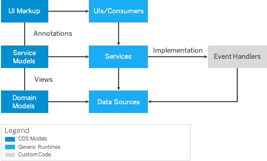
For complete documentation of CDS please refer to the following link.
-
Go tohttps://account.hana.ondemand.com and login to your SAP BTP Subaccount from where you will be subscribing to SAP Cloud for Utilities Foundation Retailer.
Note: If you have more than one subaccount choose the one from where you wish to subscribe C4U
-
Choose “Instances and Subscriptions”

- Subscribe to C4U from the SAP BTP Cockpit by clicking on “Create” button underneath your profile name.

-
A dialog box will appear asking which service you wish to subscribe to.
- Choose “Cloud for Utilities Foundation Retailer” from the dropdown.
- Select “default” as the plan.
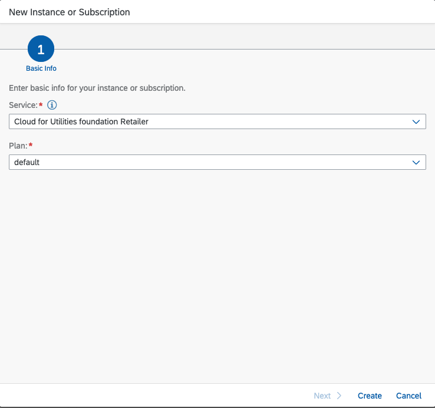
- After having subscribed to SAP Cloud for Utilities Foundation Retailer Development you will see that the subscription is processing.

- Once subscription has completed, the status will change from processing to completed.
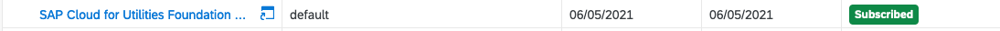
The service which implements the service broker API is referred to as the “Service Broker”. A service instance represents varies. In our context different service broker instances are created to offer different scopes required by the calling application.
For instance, you may wish to setup a service broker with only API Read or API Write rights. Extensibility is a special case and requires the following scopes depending on your situation:
-
ExtendCDS
Allows the extension developer to create and activate an extension.
-
ExtendCDSDelete
Allows the extension developer to delete tables created by a previous extension.
These scopes are not given by default by edom retailer and require a new service broker instance to be created with the above scopes to retrieve the proper jwt token for acess.
Before starting ensure that you have more than one entitlement.
Note:
The same process can be used to create different credentials with different scopes. E.g., You may wish to create a service instance with API Read Only, or a combination of different scopes depending on how you wish to give access.
In order to be able to access the API, we will create an instance of the Edom Retailer API that will give us the ability to query the released API.
- From your subaccount choose “Instances and Subscriptions”
- Create an instance by clicking on the Create button.
-
The following dialog will appear, choose the C4U CO Retailer API.
It will prompt to create a space in Cloud Foundry if you have not already done so.
Give the instance a name. The instance name must be unique across your organization.

- Since we do not want to use the default rights, hit Next to create our modified instance for extensibility.

- The following screen dialog will appear:
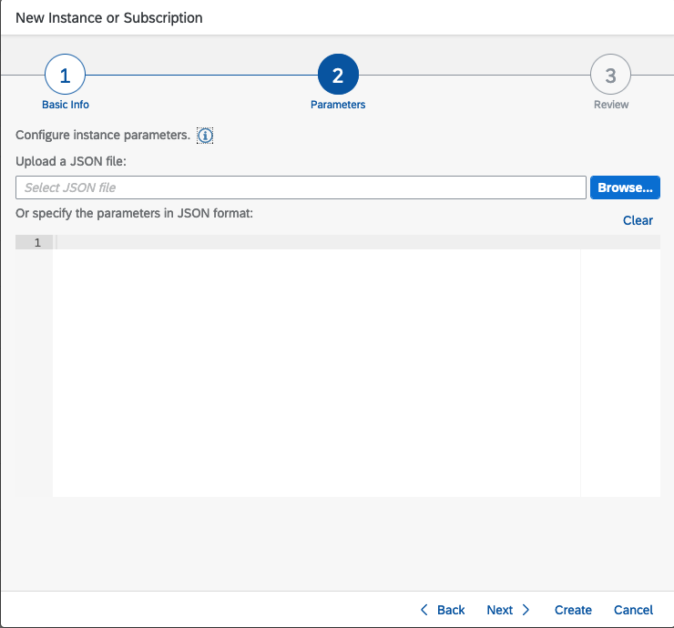
- This is the important step where we decide what scopes we will give to the instance. In this step we must provide json with the correct additional rights.
The format of the json is the following:
{
"xs-security": {
"xsappname": "c4u-foundation-retailer-dev-service-<random-numbers>",
"oauth2-configuration": {
"grant-types": [
"client\_x509",
"client\_credentials"
]
},
"authorities": \[
Array of scopes you wish to add
]
}
}
The “xsappname” refers to the edom retailer application. Above refers to the “dev-service” however in production it will be simply “service” therefore the xsappname would be “c4u-foundation-retailer-dev-service-<random-numbers>”
“random numbers” is required to differentiate the service broker instance from others. You may wish even to set it up uniquely by giving it a unique suffix. (TODO: determine a naming convention).
Scopes you wish to add must be given in the following format:
"authorities" : [
"$XSMASTERAPPNAME.ExtendCDS",
"$XSMASTERAPPNAME.API.Read",
"$XSMASTERAPPNAME.API.Write"
]
** If this step is skipped the ExtendCDS scope will not be given to the jwt token. The developer will be able to still create extensions but will not be able to double check or view them. It is best add extra scopes for the extension developer in this case so they may be able to view and edit without having to retrieve a different token for other operations.
Therefore, create a json similar to:
{
"xs-security": {
"xsappname": "c4u-cn-edom-retailer-clone-789",
"oauth2-configuration": {
"grant-types": [
"client_x509",
"client_credentials"
]
},
"authorities": [
"$XSMASTERAPPNAME.API.Write",
"$XSMASTERAPPNAME.API.Read",
"$XSMASTERAPPNAME.ExtendCDS"
]
}
}
- Add the Json to the dialog box:

- Double check your setting and then click Create

- The following dialog will appear:
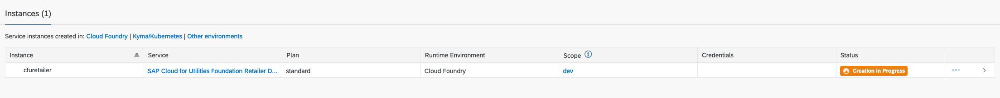
- Our instance should now be created:

Now that we have created the instance we need to create a service key. With the service key we will be able to create an oauth token that will give us the ability to query our api.
-
From the Instances table, locate the row with our newly created instance name and left click the ellipsis (…).
The following menu will appear:

- Choose “Create Service Key” and the following dialog will appear:
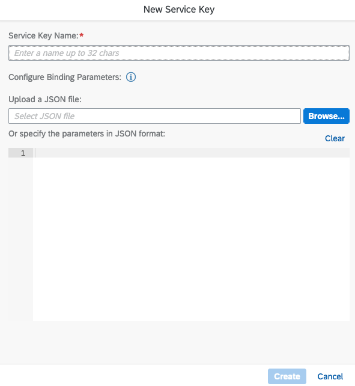
- Choose a name for our service key and click “Create”

- Our instance should now have a service key attached to it.

- Left click on the ellipsis to view our service key credentials that have been created

- Select “View” to see our credentials. The sections we are interested in are:
clientid, clientsecret and url.

You could also switch to “Form” View which might be easier to copy the required information:
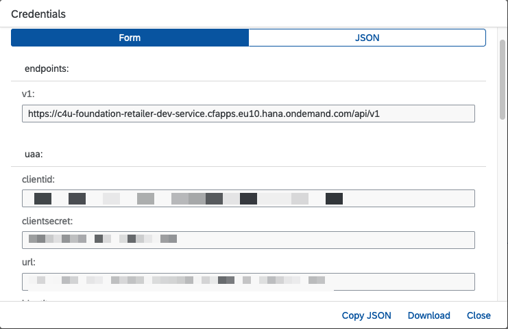
Now that we have successfully created our service key, we can use the above values to generate our Oauth2 access token. For this example, we will be using Postman and curl.
BTP (Business Technology Platform) reference documentation can be found here:
Postman https://www.postman.com/downloads/
- Start a new query and select the authorization tab. Choose as the type of authorization “Oauth 2.0”. For curl skip to the last step.

- In the configure new token section add the information we have previously retrieved from the service key. Give your token a name and proceed filling in the required information.

i. Grant type = “Client Credentials”
ii. Access token Url = (service key url) /oauth/token \
E.g. if our service key url was : https://oursubaccount.authentication.eu10.hana.ondemand.com
Then the access token url would be: https://oursubaccount.authentication.eu10.hana.ondemand.com/oauth/token
iii. Client ID = clientid from the service key \
iv. Client Secret = clientsecret from the service key. \
- Click the “Get New Access Token” button.
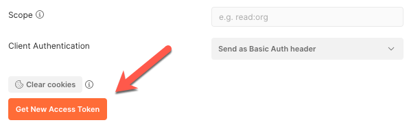
- You should receive a valid token dialog:

- Double check that you have the correct scopes for this token.
Scroll down in the Token Details dialog until you reach the scope key and verify that the “ExtendCDS” scope is there.
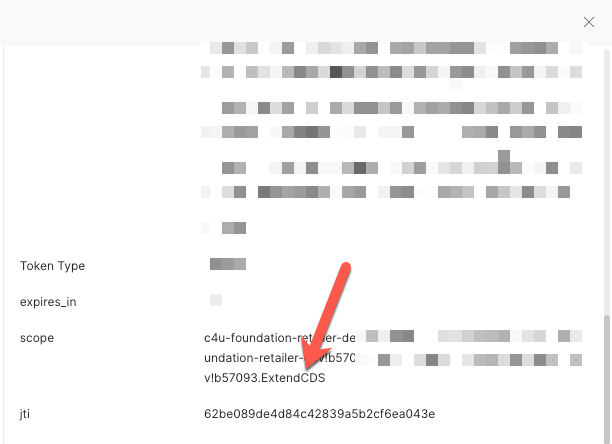
If the scope is not there, double check to make sure you created the service instance with the correct json payload. (See above)
- Click the “Use Token”. You can now share this token with other requests based on the name you have given it.
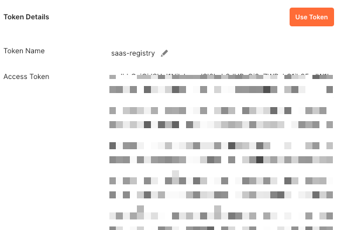
- Test a simple get.
Using your subdomain, you should be able to query for metadata to make sure our token is functioning properly.

-
In the response you should now see metadata returned from the Edom retailer.

-
If instead you need to retrieve the token using curl. Take the information you obtained previously for the clientid, clientsecret, url and plug them into the following command line:
curl --location --request POST '<url>/oauth/token'
--header 'Content-Type: application/x-www-form-urlencoded'
--header 'Authorization: Basic [base64.encoded(client_id:client_secret)](<base64.encoded(client_id:client_secret)>)'
--data-urlencode 'client_id=<client_id>'
--data-urlencode 'grant_type=client_credentials'
This will return the access token which you can use in another or request or plug into postman as the value for the Authorization key.
Eg.
Bearer: eyJhbGciOiJIUzI1NiIsInR5cCI6IkpXVCJ9.eyJzdWIiOiIxMjM0NTY3ODkwIiwibmFtZSI6IkpvaG4gRG9lIiwiaWF0IjoxNTE2MjM5MDIyfQ.SflKxwRJS
C4U CO comes with different roles that need to be assigned to extension developers. Currently there are two possible roles:
- ExtensionDeveloper:
This role is intended for an extension developer to be able to develop an extension.
-
ExtensionDeveloperUndeploy:
This role is intended for an extension developer to be able to developand extension and also be able to remove it.
As shown below:

Note: It is also a best practice to assign an application role to the developer so they have the ability to run the application and view the extension in action.
-
Create the Role Collection
Depending on the level of granulation you can decide to add other roles that are felt the developer should have, however for the purpose of developing extensions we will adhere only to the extension roles.
From BTP Cockpit choose Role Collections as shown below:
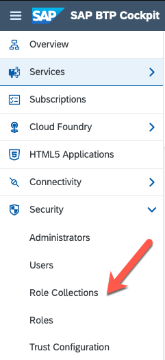
- Create a new role collection by clicking the “+” button.

- Give a name to the Extension Role Collection you are creating:

Click Create when you are finished.
- You will now see the newly created role collection in the role collection table.
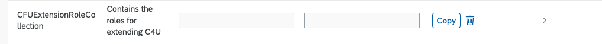
- Click the Arrow to start adding the roles.

- From the Role Collection Screen, click the Create button.

- Choose the appropriate role names from the selection box.

- Filter your possible selections by choosing c4u-foundation-retailer from the Application Identifier.

-
Select the roles for the Extension developer. Choose at a minimum the ExtensionDeveloper to develop extensions. If you wish the developer to be able to undeploy the extension then also choose the ExtensionDeveloperUndeploy Role.
In our example we will also choose the RetailerAdmin, however this is only for demonstration purposes.
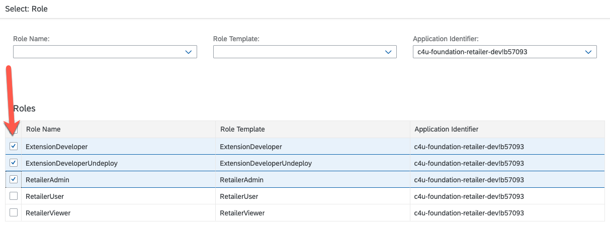
- Select Add when you are finished.
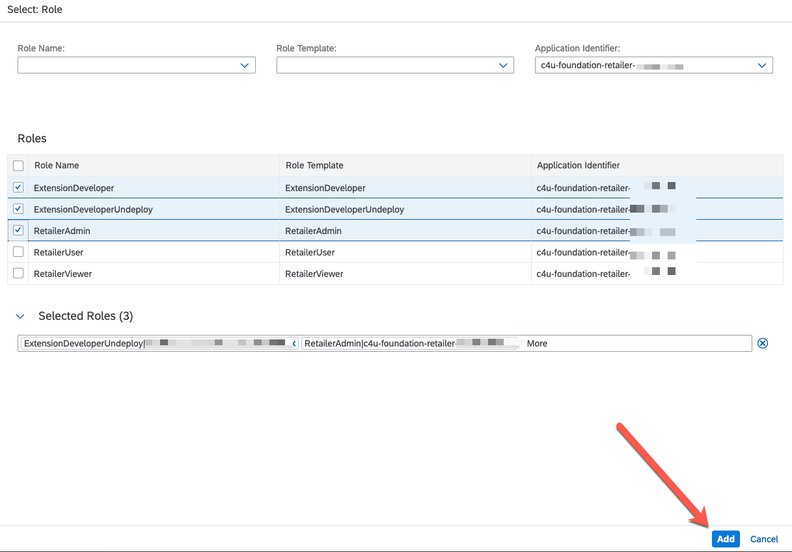
- Your screen should now be similar to this:

- Now we can assign the new users to this role collection. If users have already been created in your subaccount goto the Assign Users section below.
- Assign the users by entering in their emails

- Select the users you wish to assign the roles to by Selecting “Users” underneath Security in the left-navigation menu and then click the “+” button
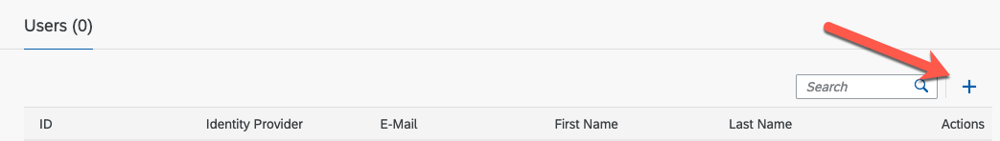
- Click save to finish
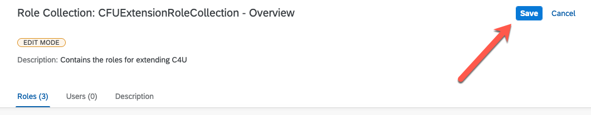
- From the BTP Cockpit choose Users underneath the Security menu.

- Select the user to assign the roles to from the user table by selecting the arrow “>” on the far right.
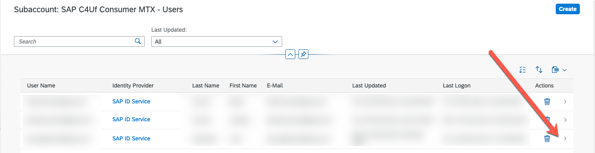
- Select “Assign Role Collection”.

- From the dialog box select the Extension roles you wish to assign to the user.
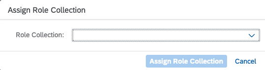
- Use the previously created role collection to assign to your users by clicking the Assign Role Collection Button.

-
The developer(s) are now ready to start their extension.
These roles are defined as “ExtendCDS” and “ExtendCDSDelete”. Once these have been added the developer can now start the extension.
Before starting the extension, project be sure to have the following setup:
- Either SAP Business Application Studio or Visual Studio Code. You can find information on how to setup here.
- The cloud foundry command linehere.
The extension is always derived from the default provider application (in this case, C4U CO Edom Retailer).
Prerequisites:
Before starting the extension project, there are a few prerequisites required:
Variables:
- The SAP Cloud for Utilities Foundation Retailer URL you will be extending:
https://edom-retailer-dev-dev-edom-retailer-srv.cfapps.eu10.hana.ondemand.com/
-
Your subaccount.
The subaccount in which you subscribed to the application (SAP Cloud for Utilities Foundation Retailer).
From the SAP BTP Cockpit, choose Overview.

The Subaccount Subdomain will be listed in the main page such as:

Note: (TODO: If you have a custom domain setup …. ????
- Create an empty directory in a preferred location on your computer.
- Open VS Code and choose the newly created directoy. (File -> Open)
- Prepare the final url:
- Create a new terminal in vscode
- Set the following env variable:
C4UDomain = “https://edom-retailer-dev-dev-edom-retailer-srv.cfapps.eu10.hana.ondemand.com/
SUBDOMAIN= your subdomain
e.g. SUBDOMAIN = edom-consumer-mtx
- The extension is always based on the deployed version of the existing application.
The deployment removes existing routes already created , they need to be recreated. (bug? Or saas-deploy)
Based on our variables from above the complete domain is:
https://edom-consumer-mtx-edom-retailer-dev-srv.cfapps.eu10.hana.ondemand.com
Note: The domain-subdomain separator is a “.” in production not the “-“ as listed in the line directly above.
-
Ensure you have been given the correct roles from the role template (at least ExtendCDS)
Please see above if this is not the case.
-
Login to your Cloud Foundry space.
If you are not in your cloud foundry space you may run into issues.
-
From the terminal execute the following command:
Reference for the cds extend command can be found here
cds extend -s edom-consumer-mtx [https://edom-retailer-dev-srv.cfapps.eu10.hana.ondemand.com](https://edom-retailer-dev-srv.cfapps.eu10.hana.ondemand.com)As a security precaution you will be prompted for a passcode. The passcode comes from your btp subaccount.
Therefore, in this case the passcode would be:
https://edom-consumer-mtx.authentication.eu10.hana.ondemand.com/passcode
Note: You can shorten the workflow to save the passcode to not have to query on every iteration.
-
If everything is successful you will see a message similar to the following:
Creating extension project for
https://edom-retailer-dev-srv.cfapps.eu10.hana.ondemand.com, subdomain
'edom-consumer-mtx', in folder '/Users/ c4uRetailerExtension'
Retrieving files...
The following folder structure should be created:
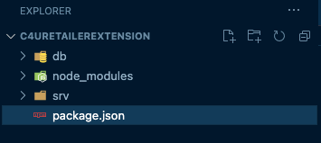
Congratulations you are ready to start your new extension project!
Note: It is a best practice to use some type of version control to track your extension project changes.
Before starting our project it makes sense to understand the extension folder we have extended:
As you have noticed the folder structure consists of the following directories:
.
├── CAP Directory Structure
├── db
│ ├── This folder is where you put your extensions of entities and UIs (Fiori Elements). (link to fiori elements?)
│ └── (see db inside node\_modules for reference of models which can beextended)
├── node_modules
│ └── Expanding this folder you will notice an embedded structure:
├── This is the reference models and services exposed that you are able to extend.
│ └── base
│ └── _i18n : This contain the i18n of the provider.
│ ├── Open the file and see the i18n keys and values.
│ ├── db : The entities available to extend./
│ │ ├── (The following is an example of the exposed list)
│ │ ├── Please refer to released documentation to understand in detail the referenced
│ │ └── entities.(get link)
│ │ └── models
│ │ ├── alpha
│ │ │ ├── configuration
│ │ │ ├── external
│ │ │ ├── mdiclient
│ │ │ └── serviceprovider
│ │ ├── extensions
│ │ │ ├── dpp
│ │ │ ├── BusinessPartnerServiceProviderExtensions.cds
│ │ │ ├── CustomerOrderUtilitiesExtensions.cds
│ │ │ └── Index.cds
│ │ └── odm
│ │ ├── billingaccount
│ │ ├── businesspartner
│ │ ├── common
│ │ ├── finance
│ │ ├── orgunit
│ │ ├── procurement
│ │ ├── product
│ │ ├── sales
│ │ └── index.cds
│ └── srv: The services that can be extended. (The following is an example of the exposed list)
│ ├── alpha
│ ├── api
│ ├── dpp
│ ├── external
│ ├── monitoring
│ ├── cds-mtx-auth.cds
│ └── service.cds
├── srv
└── This folder is where you put your extensions of services. (see srv inside of node_modules for reference)
Note: There is also a node_modules directory inside of _base, this can be ignored.
Avoid running npm install otherwise it will delete the _base folder.
Now that the directory structure has been created, we need to determine what extensions we would like to make.
The following are some of the boundary conditions we have to keep in mind before creating our extension:
-
Some entity names are reserved.
As expected prefixes of namespace extensions cannot be prefixed with com.sap.* or sap.*
-
In accordance with SAP customer extensions best practices, elements must be prefixed with either “Z_” or “Z__”
-
The maximum number of new entities (db) or new fields (srv – services) is 42.
We will start with a simple extension and then gradually build up. (Is this possible in CAP?? To reset? Sent email)
As mentioned previously, as with any development project there should be some type of version control.
Let’s get started, In this example we will extend CustomerOrder.
-
In VSCode create a file in the outer db directory and name it CustomerOrder_db_ext.cds (The naming of the file is not important however it must maintain the “.cds” extension)
Add the following to the file (keeping in mind the boundary conditions from above)
using sap.odm.sales from '\_base/db/models/odm/sales/Customer';
namespace Z_edom.extension;
using { cuid, managed } from '@sap/cds/common';
entity Z_RefPOs : cuid, managed {
email : String;
firstName : String;
lastName : String;
}
- Create a file in the outer srv directory and name it Customer_srv_ext.cds (Again the naming of the file is not important however remember to maintain the “.cds” extension.
Add the following to the file:
using from '_base/srv/api/API\_EDOM\_RETAILER';
using {Z_edom.extension as ext} from '../db/CustomerOrder\_db\_ext';
extend service API\_EDOM\_RETAILER with {
entity Z_RefPOs as projection on ext.Z_RefPOs;
}
- Activate the extension.
We activate the extension by executing the following in the terminal:
cds activate --to https://edom-consumer-mtx-edom-retailer-dev-srv.cfapps.eu10.hana.ondemand.com -s edom-consumer-mtx
Remember:
In this case the “–to” represents the full url (subdomain + domain) the -s represents the subdomain
-
You may be prompted for a passcode.
The passcode is found on the subdomain. In this case it would be:
https://edom-consumer-mtx.authentication.eu10.hana.ondemand.com/passcode
-
The output from the command will be similar to:
Note: The authentication token is not saved by default. To save the token for later commands, please run `cds login`.
Activating extension located at /Users to URL
https://edom-consumer-mtx-edom-retailer-dev-srv.cfapps.eu10.hana.ondemand.com
Activating extension...
Extension active
- Congratulations the extension is now active!
- As noted from the output above you can save the passcode token if you wish to continue modify the extension.
Querying the extension (??? Info is from provider perspective because no app xsuaa exposed in client – follow up with CAP team about this)
Once the extension has been activated, we need to verify if the data exists.
In order to be able to query from postman we need authorization to be able to view the data.
To get a new token from postman we need to query the authentication point in the following dialog:

- Retreive the Service Key that we used in the previous step taking the client Id, client secret and url.
- The authentication url would be the url above + ‘/oauth/token’
- Click “Get New Access Token”
- Name and copy the token for your requests.
Note – The token has a time limit so you may need to generate a new one, depending on how much time has elapsed since the previous time you used it.
Examples:
- Query the provider
GET:https://edom-retailer-dev-srv.cfapps.eu10.hana.ondemand.com/api/v1/$metadata
- Check the results that the extension information is not there
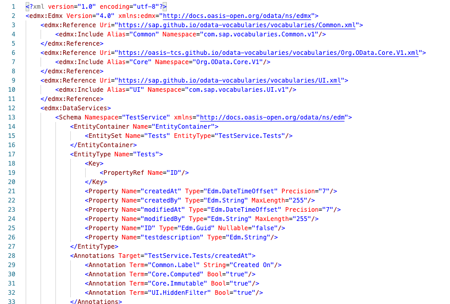
Perfect none there.
In this case edom-consumer-mtx is the subdomain or consumer or extender
Edom-extenstibility-test-dev is the provider or base
- If there isn’t a route create for the service (for the subdomain) this needs to be created. (
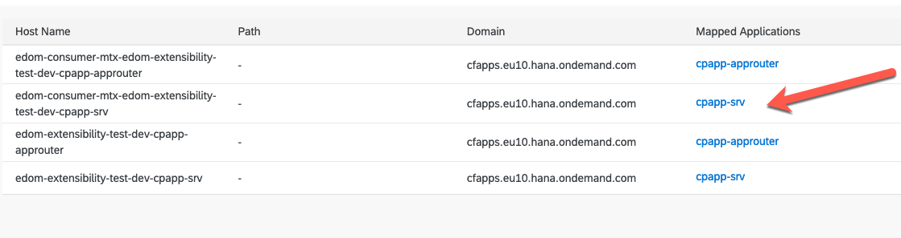
-
Use postman to retrieve the proper auth token. The token is delivered by the subaccount
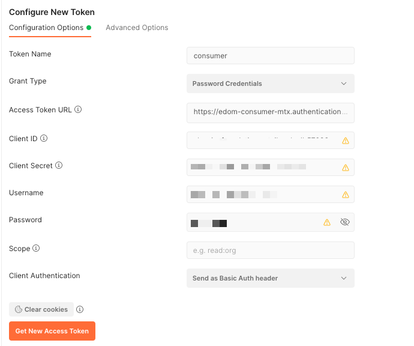
-
Access to token uri is the subdomain:
https://edom-consumer-mtx.authentication.eu10.hana.ondemand.com/oauth/token
Client Id/Client secret are the env variables of the srv. Application in the xsuaa section
“clientid”: “clientid”,
“clientsecret”: “clientsecret”
“url”: “url” + ‘/oauth/token’
-
Query the subaccount for the extension, we want to see the metadata

-
View the extended data.
<img src="media/image57.png" style="width:6in;height:5.69444in" />